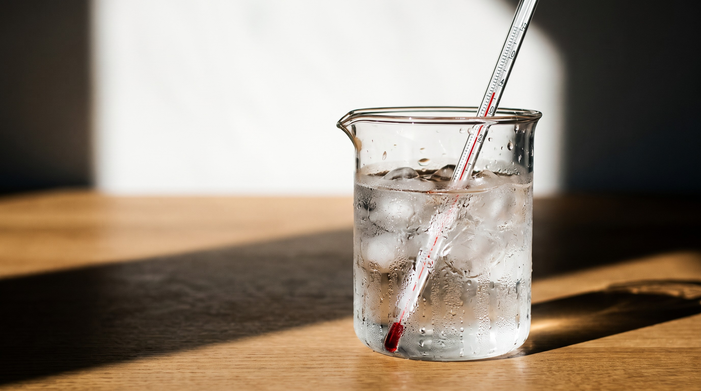
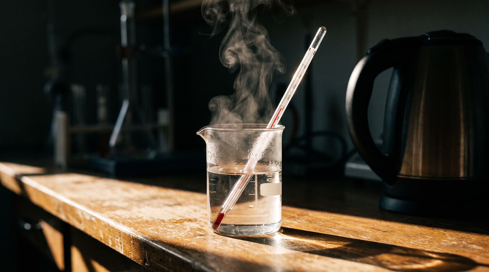

溫度特勤隊・第 4 節・飲水機偵探 2
飲水機偵探：出動！
溫水真的溫嗎？量了才知道
今天的目標：量飲水機的水，寫下溫度，判斷會不會燙，做提醒卡
今天的流程
今天要做這些事
1🧘 開場：心情地圖＋調節站開啟 ↗
2🔁 讀溫度計暖身跳到這頁 →
3🤔 先猜：溫水幾度？跳到這頁 →
4🧪 三種水：量、記、排跳到這頁 →
5🌡️ 會不會燙？跳到這頁 →
6💻 飲水機偵探（互動）開啟 ↗
7🪧 做提醒卡開啟 ↗
8🖨️ 講義＋記錄單開啟 ↗
9🌙 收尾：我做到了＋蓋章開啟 ↗
先猜猜看
飲水機的溫水，和洗澡水（大約 40 度）比——
舉手投票！猜完，帶溫度計去證明
偵探任務
三種水，一杯一杯量
1冰水：放溫度計，等紅線不動🧊
2讀數字，馬上寫下來✏️
3溫水：再量一次、再寫🟠
4熱水：看老師量🔴
5從冷排到熱↔️
⚠ 熱水很燙：老師裝、老師量
記錄單（範例）
把數字寫下來
 | 冰水 | 10 度 |
| 溫水 | 52 度 |
 | 熱水 | 95 度 |
範例數字，寫你們真的量到的
排排站
從冷排到熱
🧊 冷
熱 ♨️
數字越小越冷，數字越大越熱
做決定
會不會燙？看溫度尺
✅ 不燙
⚠ 小心燙
🔥 很燙
0
20
40
60
80
100
洗澡水大約 40 度：超過 40 小心燙，60 以上很燙，請大人裝
全班一起來
飲水機偵探
點水龍頭：先猜、再量、讀數字、判斷會不會燙。三種水都量完，就能做提醒卡。
▶ 開始調查
偵探的報告
做提醒卡，貼在飲水機旁
把全班量到的數字填進去，印出來、全班簽名，貼在飲水機旁提醒全校。
▶ 做提醒卡
生活應用
洗澡水應該是幾度比較安全？
舉手投票：你選哪一個？
40 度！
⚠ 60 度會燙傷！先放冷水再加熱水，用手背試一試
今天學到
說說看：今天學到什麼？
✏️量完一杯，馬上寫
🌡️超過 40 度，小心燙
🪧偵探的報告：提醒卡貼出來
第 4 案破案！
下一節預告
校園溫度巡邏
帶著溫度計走出教室：太陽下、大樹下、教室裡，哪裡最熱？再和天氣 App 比一比！